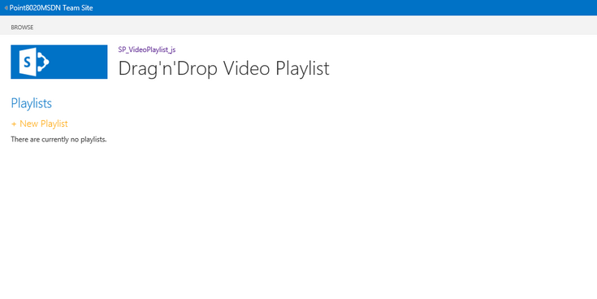
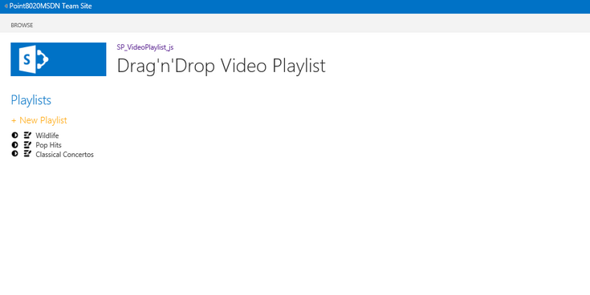
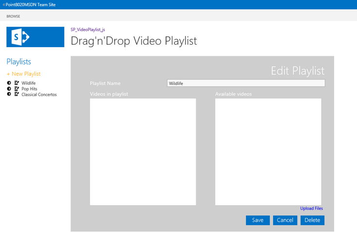
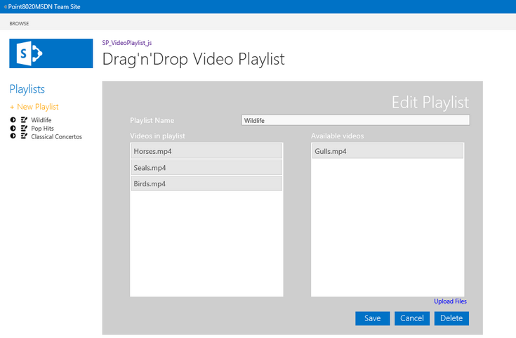
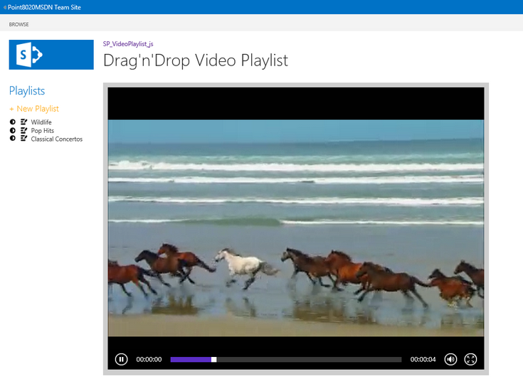
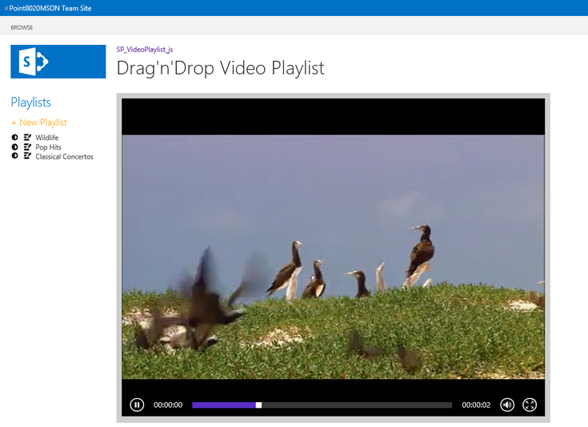

Demonstrates how to use JavaScript, jQuery, and the HTML5 video API in an app for SharePoint that manages HTML5 playlists and their playlist items, and how to use a drag-and-drop operation to add and rearrange the playlist items.
Provided by: Martin Harwar, Point8020.com
This app also demonstrates the use of a drag-and-drop operation to upload video files to create a playlist, and to specify the order of video files in a playlist. The app calls the HTML5 video API to play the selected videos.
This solution is based on the SharePoint-hosted app template provided by Visual Studio 2012. The solution uses the JavaScript implementation of the client object model to read, create, update, and delete data from lists based on user actions. The lists included in this solution represent playlists and their associated video files.
The lists are related to each other through lookup fields, and the user interface (UI) ensures that all data operations synchronize with their list items so that the relationships are maintained. The UI is implemented with HTML elements and cascading style sheet (CSS) styles to present a modern look and feel. JavaScript and jQuery are used to control all aspects of the UI, and the solution contains no server-side code.
Prerequisites
This sample requires the following:
-
Visual Studio 2012
-
Office Developer Tools for Visual Studio 2012
-
Either of the following:
-
Access to an Office 365 Enterprise site that has been configured to host apps (recommended).
-
SharePoint Server 2013 configured to host apps, and with a Developer Site Collection already created.
-
Key components
The sample app contains the following:
-
The Default.aspx webpage, which is used to create and edit playlists from MP4 video files, and which is also used to play those playlists.
-
The App.js file in the scripts folder, which is used to retrieve and manage playlist and video data by using the JavaScript implementation of the client object model (JSOM). The App.js file also contains the UI logic that is implemented in Default.aspx, such as providing a drag-and-drop user interface and providing HTML5 Media elements for playing playlists.
-
The App.css file in the contents folder, which contains style definitions used by the elements in Default.aspx.
-
Two list definitions and instances: one for productions and one for the edited clips in the productions. The lists are linked together by lookup fields. A document library is also included to let the user upload videos for inclusion in productions.
-
All other files are automatically provided by the Visual Studio 2012 project template for apps for SharePoint, and they have not been modified in the development of this sample app.
Configure the sample
Follow these steps to configure the sample.
-
Open the SP_VideoPlaylist_js.sln file in Visual Studio 2012.
-
In the Properties window, add the full URL to your Office 365 Enterprise site or SharePoint Server 2013 Developer Site Collection to the Site URL property. You may be prompted to provide credentials if you add a URL to an Office 365 site.
-
No other configuration is necessary.
Build, run, and test the sample
-
Press Ctrl+Shift+B to build the solution.
-
Press F5 to run the app.
-
Sign in to your SharePoint Server 2013 or Office 365 Enterprise site if you are prompted to do so by the browser.
-
When the app appears, the starting screen resembles Figure 1.
Figure 1. Start screen
 -
Click New Playlist to enter a new playlist name, as shown in Figure 2.
Figure 2. New Playlist form

-
Figure 3 shows that three playlists have been created. Each playlist name includes a button to play the contents of the playlist and a button to edit its contents.
Figure 3. List of playlists
 -
Click an edit button to see that playlist's details, as shown in Figure 4. At this point, no videos have been uploaded or assigned yet.
Figure 4. Edit playlist form
 -
Click the Upload Files link to open the document library that is included in the app. This is a standard document library, so you can upload video files using any of the standard methods. Figure 5 shows how to use a drag-and-drop operation to upload four MP4 files from a local folder.
Figure 5. Uploading video files

-
Now when you edit a playlist, the videos that have been uploaded are available as shown in Figure 6.
Figure 6. List of available videos

-
Figure 7 shows that you can use a drag-and-drop operation to move a video into the playlist.
Figure 7. Moving a video into a playlist

-
Figure 8 shows that three videos have been added to the playlist.
Figure 8. Playlist with three video files

-
Figure 9 shows how the order of the videos in the playlist can be managed, again with drag-and-drop techniques. In this case, the Birds.mp4 video has been moved after Seals.mp4.
Figure 9. Changing the order of videos in a playlist
 -
After arranging the videos in a playlist, click Save to apply your changes. Click the Play button for a playlist to see the first video in that playlist rendered and played. Subsequent videos in the playlist are also queued up and ready to play when the current video ends. You can see the first video playing in Figure 10.
Figure 10. Playing a playlist
 -
Figure 11 shows that the second video in the playlist automatically plays after the first video ends.
Figure 11. Playing the next video in a playlist

Troubleshooting
Ensure that you have SharePoint Server 2013 properly configured to host apps (with a Developer Site Collection already created), or that you have signed up for an Office 365 Enterprise site configured to host apps.
Change log
|
Version |
Date |
|---|---|
|
First version |
July 2013 |